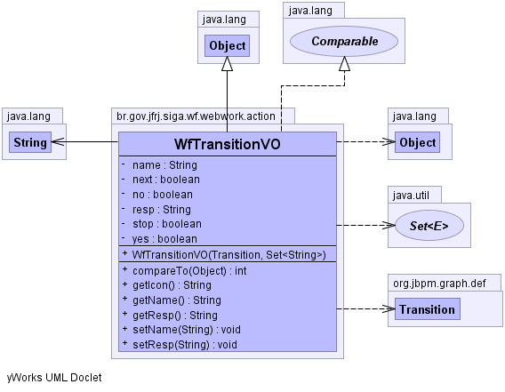

br.gov.jfrj.siga.wf.webwork.action
Class WfTransitionVO
java.lang.Object
 br.gov.jfrj.siga.wf.webwork.action.WfTransitionVO
br.gov.jfrj.siga.wf.webwork.action.WfTransitionVO
- All Implemented Interfaces:
- java.lang.Comparable
public class WfTransitionVO
- extends java.lang.Object
- implements java.lang.Comparable
Classe que repesenta um View Object (Objeto Visão, ou seja, objeto que será
usado na exibição da interface do usuário) de uma variável presente em uma
tarefa.
-
-

|
Field Summary |
private java.lang.String |
name
|
private boolean |
next
|
private boolean |
no
|
private java.lang.String |
resp
|
private boolean |
stop
|
private boolean |
yes
|
|
Constructor Summary |
WfTransitionVO(org.jbpm.graph.def.Transition t,
java.util.Set<java.lang.String> lResp)
|
| Methods inherited from class java.lang.Object |
clone, equals, finalize, getClass, hashCode, notify, notifyAll, toString, wait, wait, wait |
name
private java.lang.String name
resp
private java.lang.String resp
stop
private boolean stop
yes
private boolean yes
no
private boolean no
next
private boolean next
WfTransitionVO
public WfTransitionVO(org.jbpm.graph.def.Transition t,
java.util.Set<java.lang.String> lResp)
throws java.lang.IllegalAccessException,
java.lang.reflect.InvocationTargetException
- Throws:
java.lang.IllegalAccessException
java.lang.reflect.InvocationTargetException
getIcon
public java.lang.String getIcon()
getName
public java.lang.String getName()
setName
public void setName(java.lang.String name)
getResp
public java.lang.String getResp()
setResp
public void setResp(java.lang.String resp)
compareTo
public int compareTo(java.lang.Object o)
- Specified by:
compareTo in interface java.lang.Comparable